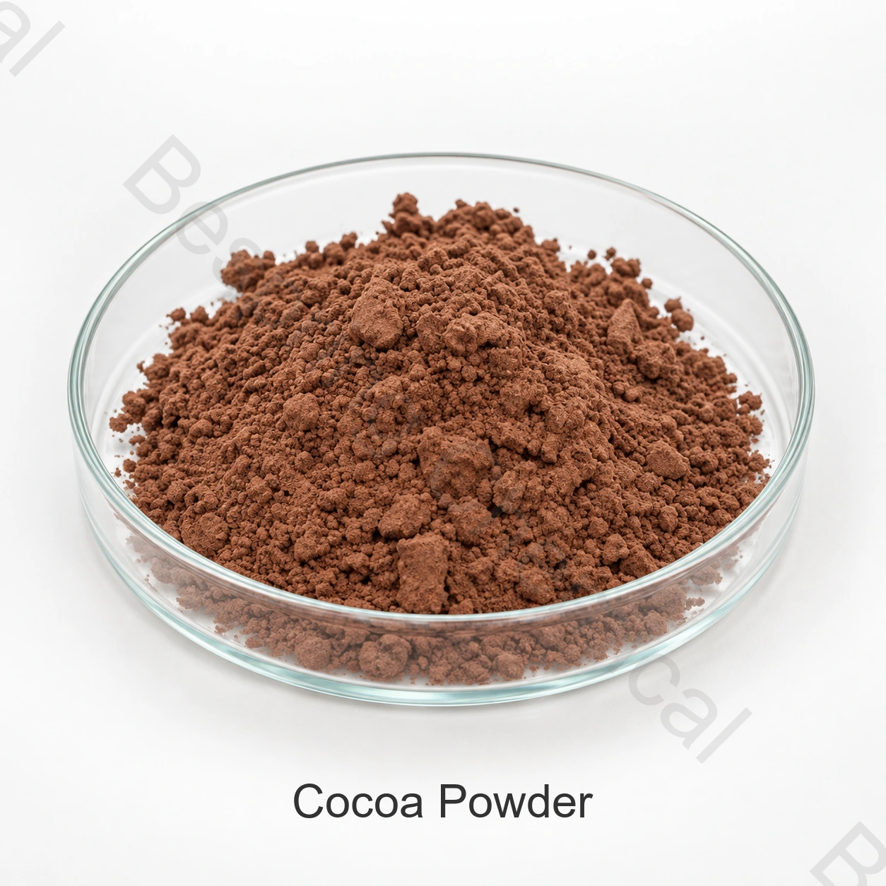

Identidad y grado
Grado natural o alcalizado, rango de grasa, pH, color, aplicación, cantidad y destino.
Ingrediente de grado alimentario · Ingrediente de cacao · COCOA
El polvo de cacao se produce transformando el torta de cacao en polvo. Los grados comerciales difieren en el contenido de cacao, procesamiento natural o alcalizado, pH, color, sabor, finura y perfil microbiológico, por lo que la selección de grado es específica para la aplicación.
Indique el grado exacto, aplicación, cantidad, embalaje, destino y documentos necesarios.

Descripción del producto
El polvo de cacao se produce transformando el torta de cacao en polvo. Los grados comerciales difieren en el contenido de cacao, procesamiento natural o alcalizado, pH, color, sabor, finura y perfil microbiológico, por lo que la selección de grado es específica para la aplicación.
Compare el grado y el origen ofrecidos con su aplicación y mercado. La especificación acordada establece los criterios de aceptación; el COA del lote informa sus resultados analíticos.
Guía de compra
Compare el grado ofrecido, los documentos del origen de suministro y las condiciones de la oferta para su aplicación.
Grado natural o alcalizado, rango de grasa, pH, color, aplicación, cantidad y destino.
Definir el color objetivo, nivel de alcalización, sabor, solubilidad o dispersión y proceso.
Proporcionar sistema de leudado, receta pH, perfil de hornear, color deseado y sabor.
Utilice el contenido acordado de manteca de cacao y método analítico en lugar de términos de marketing solo.
Selección de aplicaciones
Se trata de áreas de evaluación de formulaciones, no aprobaciones universales, recomendaciones de dosis o resultados garantizados. Confirme el uso legal y el rendimiento técnico en los alimentos terminados.
Equilibre pH, leudado, color, sabor y absorción de humedad en la receta real.
Evaluar la humedad, dispersibilidad, sedimento, sabor, sistema de azúcar y procesamiento.
Combina contenido de grasa, finura, color y sabor a rellenos, revestimientos y sistemas compuestos.
Evalúe el color, liberación de sabores, dispersión y microbiología para el proceso previsto.
Selección técnica
El tratamiento cambia pH, color y sabor; poner la nota exacta en el RFQ.
Compare las calificaciones sobre una base de prueba de la materia seca acordada.
Utilice muestras físicas aprobadas y objetivos instrumentales donde la consistencia es crítica.
Establecer criterios y controles apropiados para el proceso de alimentos terminados de baja humedad.
Documentación técnica
Solicite al equipo comercial la especificación del origen ofrecido o su ficha técnica (TDS), los métodos de ensayo y los criterios de aceptación.
Solicite la especificación vigente firmada o TDS, SDS, métodos analíticos, COA representativo y COA del lote.
Verifique la seguridad alimentaria aplicable, calidad, origen, alérgeno, Kosher, Halal y certificados de sitio para el grado y fuente exactos.
Consulte Codex Standard for Cacao en polvos (CXS 105-1981), aplique la normativa vigente del mercado de destino al alimento terminado.
Nota de cumplimiento: Las referencias de identidad internacional no autorizan por sí mismas cada aplicación. El comprador es responsable de confirmar la categoría de alimentos, nivel de uso, declaración de etiquetas y otros requisitos en cada mercado objetivo.
Almacenamiento y manipulación
Preguntas del comprador
El polvo de cacao se produce transformando el torta de cacao en polvo. Los grados comerciales difieren en el contenido de manteca de cacao, procesamiento natural o alcalizado, pH, color, sabor, finura y perfil microbiológico, por lo que la selección de grado es específica de aplicación.
Torta de cacao molida; Codex CXS 105-1981; Natural o alcalizado; confirmar. Cuando el nombre cubre una familia o mezcla, confirme el miembro exacto y la composición antes de la aprobación.
La especificación depende del origen y del producto contratado. Solicite la versión vigente firmada o la ficha técnica (TDS), los métodos analíticos y un COA representativo.
Pida la especificación actual o TDS, SDS, COA representativo, COA de lote y la seguridad alimentaria relevante, origen, alérgenos, Kosher, Halal u otros certificados para la fuente exacta.
Proporcione el grado exacto o tipo, aplicación, necesidades críticas de rendimiento, cantidad, embalaje, mercado objetivo, documentos requeridos, fecha de entrega solicitada y Incoterm.
Suministros relacionados
Examine toda la cartera y dossiers de productos técnicos disponibles.
Consulte al equipo comercial sobre la especificación del origen ofrecido, la documentación, las muestras y las condiciones comerciales.
Examinar la contratación y el apoyo a las exportaciones para la adquisición de ingredientes internacionales.
Suministro adaptado a la aplicación
Indique el grado exacto o tipo, aplicación, requisitos críticos de rendimiento, cantidad, embalaje, destino y lista de documentos para una propuesta pertinente.